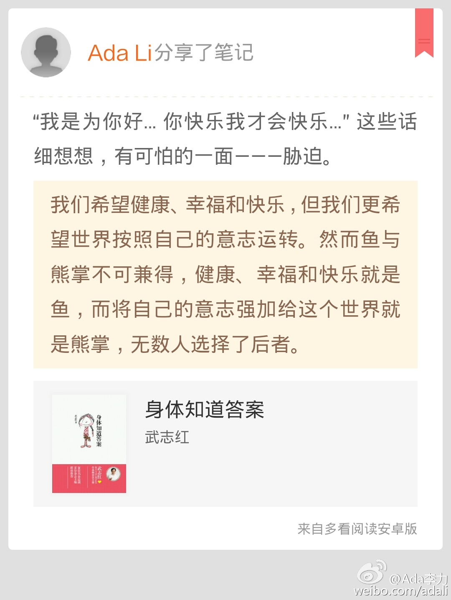
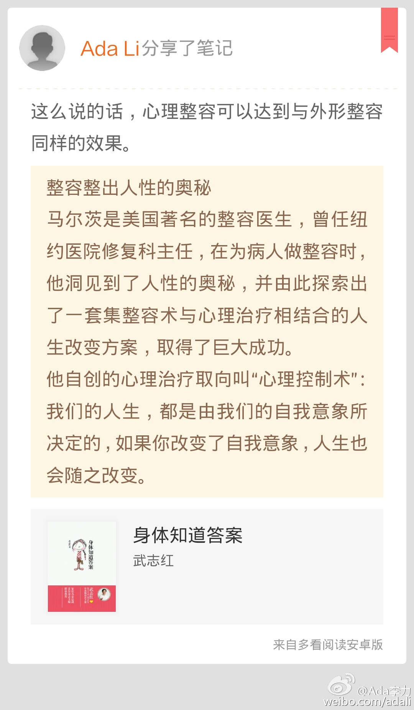

“我是为你好… 你快乐我才会快乐…” 这些话细想想，有可怕的一面———胁迫。//#多看笔记# “我们希望健康、幸福和快乐，但我们更希望世界按照自己的意志运转。然而鱼与熊掌不可兼得，健康、幸福和快乐就是鱼，而将自己... ” 摘自《身体知道答案》@多看阅读 网页链接 
问了半天才知道，#姣姣#是想把这个消息留到爸爸冲她发火的时候用。没想到马上就有机会用到了，她一次数学模拟考试很糟糕，连进她爸爸屋的勇气也没有，说爸爸如果问起来，让我替她说，我问语文的好消息要不要一起说，姣姣说:随便。@Ada李力:#姣姣#看起来很高兴，我问她在乐什么，她说最近语文考了第一名，之前她一直最怕语文。我说到家可以把这个好消息告诉爸爸，结果姣姣说不告诉爸爸，也不让我说。鉴于尊重她的想法，我答应不说。
成了一个怪圈: 明俊吼#姣姣#的时候，我看不过去，就吼明俊，说如果学生学不进去，他只是一味指责学生，怎么不想想他作为教师的责任? 如果一直这样教，我宁愿让姣姣去上外面的辅导班，而不是让爸爸教。— 然后姣姣就会制止我，让我别说了。唉～
回复@大胃哥:看来家家都相似哈。//@大胃哥:家长都这样，着急! 我们家遇到这种情况就会换人，一会爸爸，一会儿妈妈。有时候会反复换个几次@Ada李力:成了一个怪圈: 明俊吼#姣姣#的时候，我看不过去，就吼明俊，说如果学生学不进去，他只是一味指责学生，怎么不想想他作为教师的责任? 如果一直这样教，我宁愿让姣姣去上外面的辅导班，而不是让爸爸教。— 然后姣姣就会制止我，让我别说了。唉～
回复@艾玛_Y:嗯，吸取感受。//@艾玛_Y:我冲儿子吼的时候也是自感最沮丧的时候，这时候我不希望别人指责我说我的方法不对，而更愿意听到建设性的意见，例如更好的方法，能让孩子听进去的更好的方法@Ada李力:成了一个怪圈: 明俊吼#姣姣#的时候，我看不过去，就吼明俊，说如果学生学不进去，他只是一味指责学生，怎么不想想他作为教师的责任? 如果一直这样教，我宁愿让姣姣去上外面的辅导班，而不是让爸爸教。— 然后姣姣就会制止我，让我别说了。唉～
回复@老牛不弯:孩子也是心疼爸爸，她宁愿自己挨骂，也不希望看见父母争吵。//@老牛不弯:孩子心疼你啊@Ada李力:成了一个怪圈: 明俊吼#姣姣#的时候，我看不过去，就吼明俊，说如果学生学不进去，他只是一味指责学生，怎么不想想他作为教师的责任? 如果一直这样教，我宁愿让姣姣去上外面的辅导班，而不是让爸爸教。— 然后姣姣就会制止我，让我别说了。唉～
这么说的话，心理整容可以达到与外形整容同样的效果。//#多看笔记# “整容整出人性的奥秘 马尔茨是美国著名的整容医生，曾任纽约医院修复科主任，在为病人做整容时，他洞见到了人性的奥秘，并由此探索出了一套集整容术与心... ” 摘自《身体知道答案》@多看阅读 网页链接 